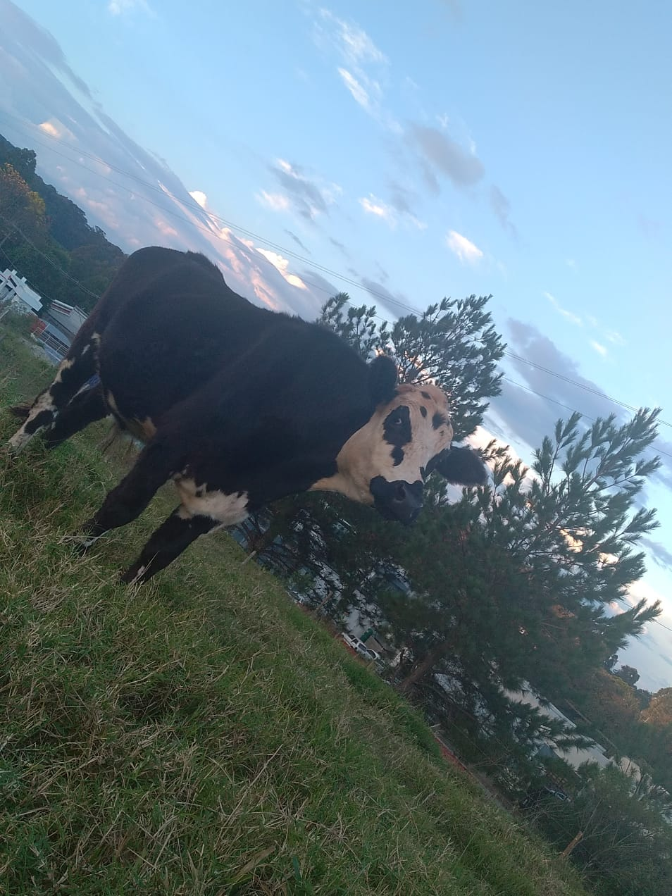

Vida no Campo
A vida no campo representa a essência da conexão entre natureza e cultura. As áreas rurais são espaços onde a agricultura sustentável e o respeito ao meio ambiente caminham juntos para garantir um futuro melhor para as próximas gerações.
Comunidades rurais valorizam suas tradições e promovem um estilo de vida que respeita o ritmo natural, incentivando práticas agrícolas responsáveis e a preservação dos recursos naturais essenciais, como a água e o solo fértil.
Além da produção agrícola, a zona rural abre portas para o turismo sustentável, onde visitantes têm a oportunidade de vivenciar a cultura local, participar de eventos tradicionais e conhecer tecnologias inovadoras que transformam o campo em um espaço de inovação e sustentabilidade.